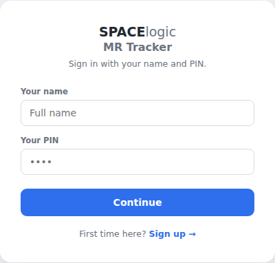
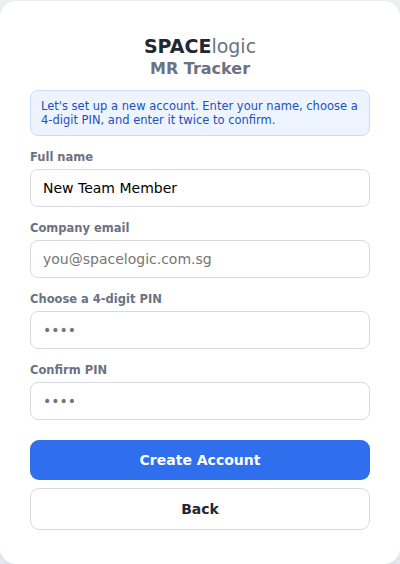
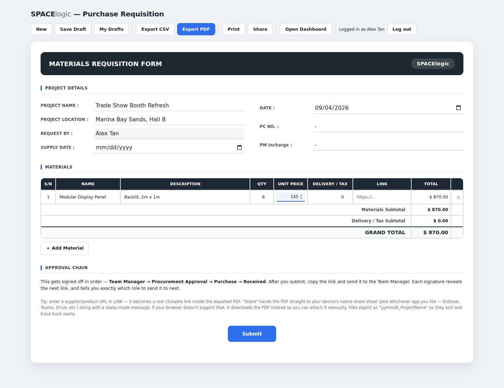
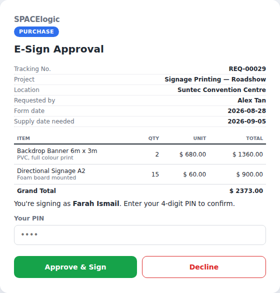
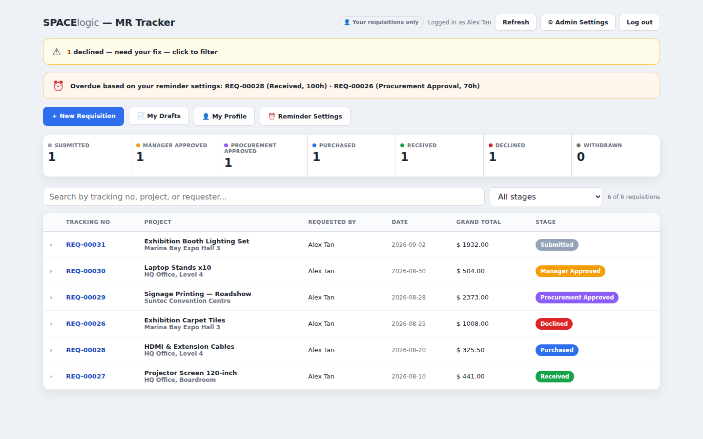
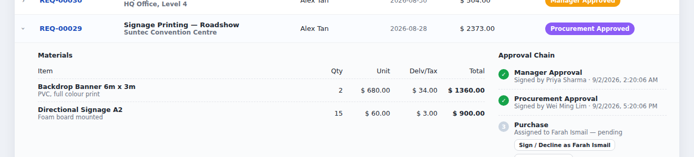
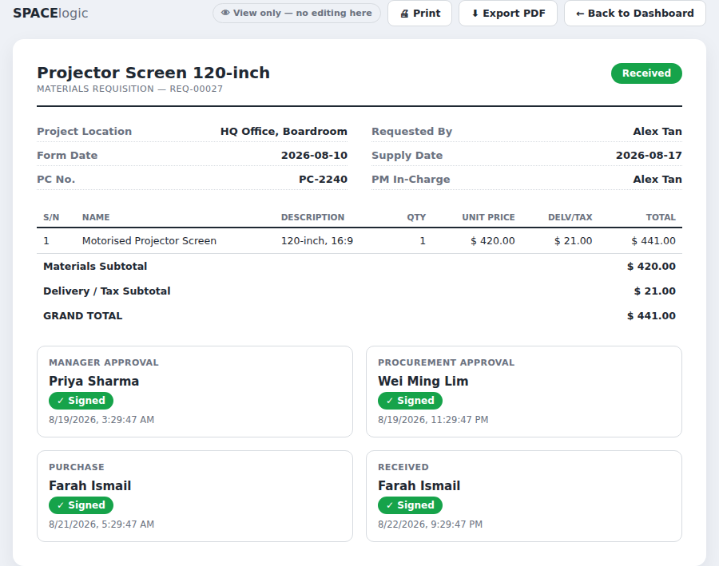
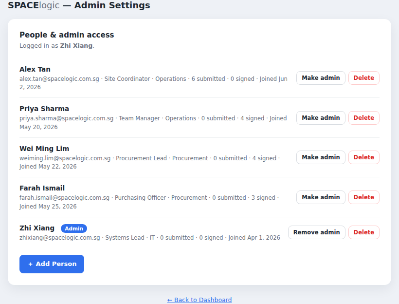

User Manual & FAQ
Everything you need to submit, approve, and track purchase requisitions in MR Tracker — plus quick answers at the bottom.
How it works
Every requisition moves through the same five stages, in order. Click a stage below to see what happens at each one.
Creating an account
Anyone with a @spacelogic.com.sg company email can create an account — no admin approval needed.
- Go to the sign-in page and type your full name. Since you're new, you'll be moved to the sign-up form automatically.
- Enter your company email, then choose a 4-digit PIN and type it twice to confirm.
- A 6-digit verification code is emailed to you. Enter it on the next screen to finish creating your account.
- Optionally add your position and department — or skip this and add it later.


Signing in
Every time you visit MR Tracker, sign in with your full name and 4-digit PIN. Your name has autocomplete — start typing and pick yourself from the list.
Your session stays active until you close the tab or click Log out. If someone else needs to use the same computer, always log out first — PINs are personal and shouldn't be shared.
Submitting a requisition
- From the dashboard, click + New Requisition. This opens the full form.
- Fill in the project details — name, location, supply date — and add each material line by line: name, description, quantity, unit price, and any delivery/tax cost.
- If an item has a supplier or product page, paste the URL into the Link field — it becomes clickable in the exported PDF later.
- Click Submit at the bottom of the form.

Once submitted, you'll get a link for whoever needs to approve as Team Manager first. You can copy it, or use the built-in send by email box to email it directly — no login needed for them to open it.
Saving drafts
Not ready to submit? Click Save Draft at any point. Your draft is saved to your account — access it later from My Drafts on the form page, from any device, as long as you're signed in.
If your requisition is declined
You'll see it flagged on your dashboard with the reason it was declined. Click into it, then Edit & Resubmit in Full Form — this reopens the complete form (not a cramped popup) with everything you already entered, ready to fix.
Withdrawing a request
Changed your mind, or the request is no longer needed? Open the requisition on your dashboard and click Withdraw this requisition. This is only available to you as the original requester, and only before it's been purchased.
Approving or declining a requisition
When it's your turn to review, you'll get a link — either sent to you directly, or claimed from the dashboard by whoever's next.
- Open the link. If this is your first time on this specific step, type your name and a 4-digit PIN (existing accounts just enter their usual PIN).
- Review the project details and line items shown.
- Click Approve & Sign to move it forward, or Decline with a short reason if something's wrong.

After you sign, a new link appears for the next stage — pass it along, or let the next person claim it directly from the dashboard.
Using the dashboard
The dashboard is where everything lives: your own submissions, anything waiting on your signature, and — if you're an admin — every requisition in the system.

- Pipeline row — shows counts by stage, and doubles as a filter. Click any stage to see just those requisitions.
- Action banner — appears only when something needs your attention (awaiting your signature, or declined and needs fixing).
- Search — find anything by tracking number, project name, or requester.
- Click a row to expand it — see line items, the full approval chain with signature timestamps, and available actions.

Reminder settings
Click Reminder Settings to set your own overdue thresholds for each stage — in hours or days. If one of your own submissions sits past that threshold at any stage, an overdue banner appears at the top of your dashboard automatically. Leave a field blank to turn reminders off for that stage.
Exporting & printing
Open the full form view of any requisition (Open full form view → from the dashboard) to Print or Export PDF — a complete, formatted record including every signature and timestamp, suitable for filing or sharing outside the system.

Your profile & PIN
Click My Profile to update your position, department, or company email. In the same window, use Change PIN to update your PIN — you'll need your current PIN to confirm the change.
Managing people (admins only)
Admins can open Admin Settings to see every account — name, email, position, submission and signature counts — and:
- Add Person — pre-create an account for someone directly, without waiting for them to sign up themselves.
- Delete — remove an account. Their name stays attached to any past requisitions; only the login itself is removed.
- Make/Remove admin — grant or revoke admin access. There must always be at least one admin.

Admins can also expand any requisition on the dashboard to edit its details, override a stuck approval stage, or reassign a signer.
Frequently Asked Questions
What email should I sign up with?
Your real @spacelogic.com.sg company email. It's required — the system won't accept personal email addresses (Gmail, Yahoo, etc.) — and each email can only be linked to one account.
I forgot my PIN. What do I do?
PINs are stored securely and can't be looked up or reset by anyone, including admins. Ask an admin to open Admin Settings, delete your account, and re-add you (or let you sign up again) with a new PIN. You'll keep your name on any past requisitions either way.
Can I use the same account on multiple devices?
Yes — sign in with your name and PIN on any device, anytime. There's nothing to install and nothing tied to a specific computer or phone.
Can two people share one login?
No. Every signature is legally meaningful — it's how the system proves who approved what. Each person needs their own account so their name and PIN are the only thing that can sign on their behalf.
Can I edit a requisition after submitting it?
Not directly, unless it gets declined. If you need changes before anyone has approved it, ask that person to decline it with a reason, then use Edit & Resubmit to fix and resend it.
What happens when a requisition is declined?
It's flagged on your dashboard with the reason. Open it, click Edit & Resubmit in Full Form, fix what was flagged, and resubmit. This restarts the entire approval chain from the Team Manager — even if it was declined later at Procurement or Purchase — so everyone re-confirms the revised request.
Can I withdraw a requisition after submitting it?
Yes, any time before it's been purchased — at Submitted, Manager Approved, or Procurement Approved stages, or if it was declined. Open it on your dashboard and click Withdraw this requisition. Only the original requester can do this. Once it reaches the Purchased stage, withdrawal is no longer available.
What if the next person hasn't signed yet?
Nothing moves forward until they do — that's intentional, so approvals happen in order. You can set your own Reminder Settings to get flagged if a stage sits pending longer than you'd expect.
What if I lose the sign-off link that was sent to me?
Ask the requester to open the requisition on their dashboard and click Regenerate link — this invalidates the old link and gives you a fresh one.
Why didn't I receive an email notification?
A few possibilities: you don't have an email saved on your profile yet (add one under My Profile), the email landed in spam, or — for very new systems — a company mail filter is still learning to trust the sending address. Check your spam folder first, and let an admin know if it keeps happening.
Who gets emailed, and when?
The requester is emailed when their requisition is declined or purchased. The purchaser is emailed when it's marked received. You can also manually email any sign-off link to someone directly from the copy-link screen.
Is my data secure? Who can see my requisitions?
You see your own submissions and anything assigned to you for signing. Admins see everything. This is enforced at the database level, not just hidden in the screen — so it can't be bypassed by guessing a link or URL.
How do I become an admin?
An existing admin needs to grant you admin access from Admin Settings. There must always be at least one admin in the system.
Do I need to install anything?
No — MR Tracker runs entirely in your web browser. No app, no plugin, works on desktop and mobile.